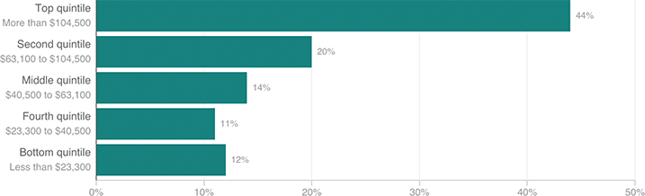

The Richest Americans Have By Far The Most Student Debt
The below chart shows the share of all student debt held by households in each income quintile, among people age 20 and older. The top 20 percent of households held 44 percent of the debt as of 2013.
